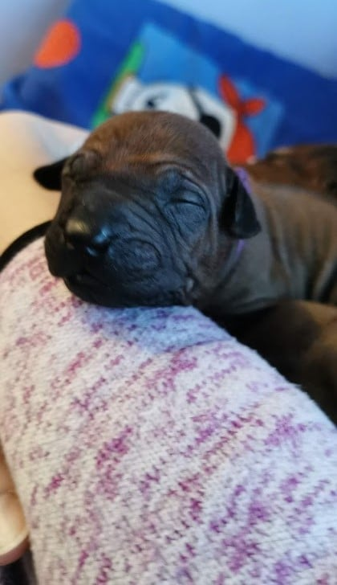
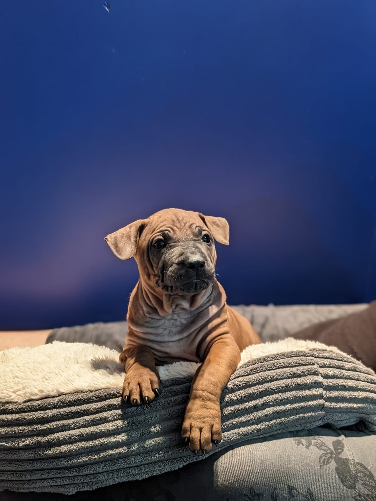

Mika
Rak Sunakh Umika Bhavishy Saat



Onmogelijk te weerstaan aan ons kleinste meisje … Als zevende (Saat) geboren in het nest van Sopa & Kamron, blijft deze pittige dame van dag 1 bij Rak Sunakh. Zij is de toekomst (Bhavishy) van onze kennel. Wij kijken uit naar haar ontwikkeling en staan te trappelen om met haar de wereld te veroveren.
Name
PRak Sunakh Umika Bhavishy Saat
Date of Birth
16.09.2021
Mother
OSTEN TRD FAH KAMRON @ RAK SUNAKH
Father
DAEN THAI'S SOPA CHOMPOO @ RAK SUNAKH
Color
Rood
Sex
Teef
Land of Origin
België
Breeder
Rak Sunakh - Serge Leemans